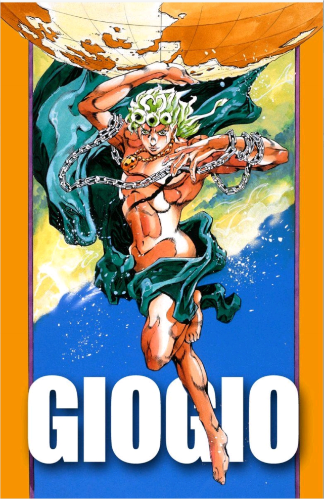

“黄金精神”是一个贯穿全系列的核心概念，成为连接各代JOJO及其伙伴们的精神纽带
它代表着一种美德，核心是正义感，同时掺杂了友情、亲情和爱情
黄金精神并不仅限于JOJO家族成员，也包括了与他们并肩作战的伙伴们，以及在故事中同样闪闪发光的配角人物
承太郎的外在形象高大魁梧，浑身肌肉虬结，脸上有着笔挺的线条，气质上继承了乔斯达家族的欧洲硬汉形象。然而，他并非只是一个四肢发达、头脑简单的硬汉。在战斗中，他冷静、果断，面对强大的敌人从不退缩，总是能够找到克敌制胜的方法
尽管他平时表现得冷漠、叛逆，甚至给人一种不良少年的感觉，但在关键时刻，他总是能够挺身而出，保护身边的人免受伤害
承太郎痛恨利用弱者、践踏他人尊严的人。在面对这样的敌人时，他总是毫不留情地予以打击。在战斗中，他也总是尽量控制自己的力量，避免对敌人造成不必要的伤害
乔鲁诺·乔巴拿，作为DIO与某日本女子所生下的儿子，他继承了DIO与乔斯达的特质。他拥有DIO的金发和乔斯达的星型胎记，更在人格上融合了DIO的冷酷与心机以及乔斯达的勇气和正义感
乔鲁诺作为DIO的儿子，却并没有走上DIO的老路，而是选择了与DIO截然不同的道路——追求正义和希望。他用自己的行动证明了即使身处宿命的纠缠中，也能通过自身的努力来反抗和改变命运
乔鲁诺小队的【黄金精神】，在他们对宿命的反抗中展现得淋漓尽致
在第五部中，宿命感并不仅仅体现在个别角色的命运上，而是贯穿了整个故事的主题。无论是乔鲁诺还是其他小队成员，他们的命运都似乎被某种力量所牵引和束缚，充满了具有宗教意味的暗示
从‘命运的滚石’替身的暗示，到虫箭的选择，故事的终点似乎在其开始前就早有答案，小队中布加拉提等人的生死宿命也早已既定
然而，在认识到自身宿命不可改变后，仍义无反顾地踏上反叛之路，这样的【觉悟】正是黄金精神歌颂的对象
